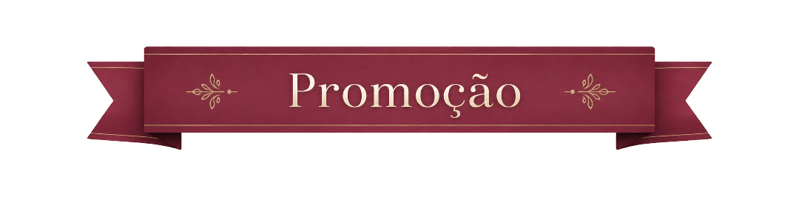

Sobre a Peça
Oroiná, o Orixá do fogo, guardiã da energia transformadora. Esta escultura captura sua essência com detalhes minuciosos das chamas que o envolvem e trazem sua força e renovação.
- Material: Resina de alta resistência
- Acabamento: Pintura feita a mão
- Altura: 15 cm
Orixá
Oroiná
Fogo sagrado que transforma e renova